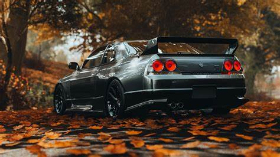
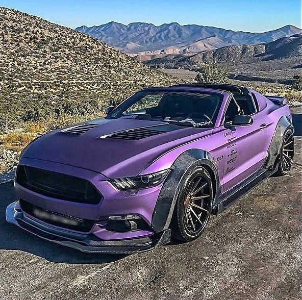

Carros Turnados🚗
foto de carro

Carros Turnados
modelos de carros esportivos
como turna seu carro
- quando surgiu o turning? O conceito atual do tuning, envolvendo modificações mais profundas na mecânica e carroceria, que surgiu nos EUA ainda na década de 50
- oque é turna? é a prática de customizar o seu carro de acordo com o seu gosto e estilo,
- quanto custa para tunar chevette? R$ 3.471,30, kit com turbina.



05 melhores carros baratos para tunar no Brasil em 2025
- Lugar – Chevrolet Astra

- Lugar – VW Golf

- Lugar – Volkswagen Gol

- Lugar – Chevrolet Onix

- Lugar – chevette